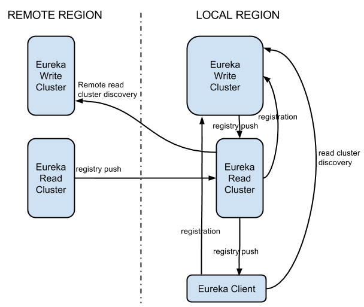
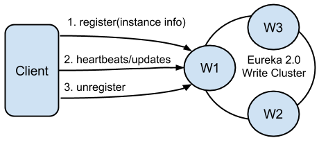

<!DOCTYPE html>
<html>
<head><meta name="generator" content="Hexo 3.8.0">
  <meta charset="utf-8">
  

  
  <title>什么是springcloud | Feng Xiang Blog</title>
  <meta name="viewport" content="width=device-width, initial-scale=1, maximum-scale=1">
  <meta name="description" content="通过整个架构的演变过程来理解微服务架构springcloud">
<meta name="keywords" content="spring cloud,SOA,微服务,架构">
<meta property="og:type" content="article">
<meta property="og:title" content="什么是springcloud">
<meta property="og:url" content="https://blog.ofengx.com/2019/07/30/什么是springcloud/index.html">
<meta property="og:site_name" content="Feng Xiang Blog">
<meta property="og:description" content="通过整个架构的演变过程来理解微服务架构springcloud">
<meta property="og:locale" content="zh-CN">
<meta property="og:image" content="https://blog.ofengx.com/2019/07/30/什么是springcloud/monolithicApplication.jpg">
<meta property="og:image" content="https://blog.ofengx.com/2019/07/30/什么是springcloud/soa.gif">
<meta property="og:image" content="https://blog.ofengx.com/2019/07/30/什么是springcloud/microservices.jpg">
<meta property="og:image" content="https://blog.ofengx.com/2019/07/30/什么是springcloud/soa-vs-microservices.png">
<meta property="og:image" content="https://blog.ofengx.com/2019/07/30/什么是springcloud/modern.jpg">
<meta property="og:image" content="https://blog.ofengx.com/2019/07/30/什么是springcloud/modern2.jpg">
<meta property="og:image" content="https://blog.ofengx.com/2019/07/30/什么是springcloud/eureka1.png">
<meta property="og:image" content="https://blog.ofengx.com/2019/07/30/什么是springcloud/eureka2.png">
<meta property="og:image" content="https://blog.ofengx.com/2019/07/30/什么是springcloud/eureka3.png">
<meta property="og:image" content="https://blog.ofengx.com/2019/07/30/什么是springcloud/hystrix-command-flow-chart.png">
<meta property="og:image" content="https://blog.ofengx.com/2019/07/30/什么是springcloud/gateway.png">
<meta property="og:image" content="https://blog.ofengx.com/2019/07/30/什么是springcloud/config1.png">
<meta property="og:updated_time" content="2019-10-30T03:27:54.263Z">
<meta name="twitter:card" content="summary">
<meta name="twitter:title" content="什么是springcloud">
<meta name="twitter:description" content="通过整个架构的演变过程来理解微服务架构springcloud">
<meta name="twitter:image" content="https://blog.ofengx.com/2019/07/30/什么是springcloud/monolithicApplication.jpg">
  
    <link rel="alternate" href="/atom.xml" title="Feng Xiang Blog" type="application/atom+xml">
  
  
    <link rel="icon" href="/favicon.png">
  
  
    <link href="//fonts.googleapis.com/css?family=Source+Code+Pro" rel="stylesheet" type="text/css">
  
  <link rel="stylesheet" href="/css/style.css">

  <link href="https://cdnjs.cloudflare.com/ajax/libs/KaTeX/0.10.0/katex.min.css" rel="stylesheet" type="text/css">
</head>
</html>
<body>
  <div id="container">
    <div id="wrap">
      <header id="header">
  <div id="banner"></div>
  <div id="header-outer" class="outer">
    <div id="header-title" class="inner">
      <h1 id="logo-wrap">
        <a href="/" id="logo">Feng Xiang Blog</a>
      </h1>
      
    </div>
    <div id="header-inner" class="inner">
      <nav id="main-nav">
        <a id="main-nav-toggle" class="nav-icon"></a>
        
          <a class="main-nav-link" href="/">首页</a>
        
          <a class="main-nav-link" href="/archives">归档</a>
        
      </nav>
      <nav id="sub-nav">
        
          
            <a id="nav-icon-github" class="nav-icon" href="https://github.com/efengx" title="GitHub"></a>
          
            <a id="nav-icon-twitter" class="nav-icon" href="https://twitter.com/heiyexinghai" title="Twitter"></a>
          
        
        
          <a id="nav-rss-link" class="nav-icon" href="/atom.xml" title="RSS Feed"></a>
        
        <a id="nav-search-btn" class="nav-icon" title="搜索"></a>
      </nav>
      <div id="search-form-wrap">
        <form action="//google.com/search" method="get" accept-charset="UTF-8" class="search-form"><input type="search" name="q" class="search-form-input" placeholder="Search"><button type="submit" class="search-form-submit">&#xF002;</button><input type="hidden" name="sitesearch" value="https://blog.ofengx.com"></form>
      </div>
    </div>
  </div>
</header>
      <div class="outer">
        <section id="main"><article id="post-什么是springcloud" class="article article-type-post" itemscope itemprop="blogPost">
  <div class="article-meta">
    <a href="/2019/07/30/什么是springcloud/" class="article-date">
  <time datetime="2019-07-30T03:21:21.000Z" itemprop="datePublished">2019-07-30</time>
</a>
    
  </div>
  <div class="article-inner">
    
    
      <header class="article-header">
        
  
    <h1 class="article-title" itemprop="name">
      什么是springcloud
    </h1>
  

      </header>
    
    <div class="article-entry" itemprop="articleBody">
      
        
                  

        <p>通过整个架构的演变过程来理解微服务架构springcloud</p>
<a id="more"></a>
<h2 id="架构发展历程"><a class="markdownIt-Anchor" href="#架构发展历程"></a> 架构发展历程</h2>
<blockquote>
<p>单体架构 -&gt; SOA架构 -&gt; 微服务架构</p>
</blockquote>
<h3 id="单体架构"><a class="markdownIt-Anchor" href="#单体架构"></a> 单体架构</h3>
<p></p>
<ul>
<li>这种将所有功能都部署在一个web容器中运行的系统就叫做单体架构（也叫：巨石型应用）。</li>
</ul>
<h3 id="soa架构面向服务的体系结构"><a class="markdownIt-Anchor" href="#soa架构面向服务的体系结构"></a> SOA架构（面向服务的体系结构）</h3>
<p></p>
<ul>
<li>面向服务的体系结构不是关于如何模块化应用程序，而是关于如何通过集成分布式，单独维护和部署的软件组件来组合应用程序。它通过技术和标准实现，使组件更容易通过网络进行通信和协作，尤其是IP网络。</li>
</ul>
<h3 id="微服务架构spring-cloud"><a class="markdownIt-Anchor" href="#微服务架构spring-cloud"></a> 微服务架构(spring cloud)</h3>
<p></p>
<ul>
<li>微服务的好处有：服务独立、扩展性好、可靠性强，但同时，也面临一些新的问题，比如运维复杂性，分布式复杂性、监控复杂性等等</li>
</ul>
<h3 id="微服务与soa区别"><a class="markdownIt-Anchor" href="#微服务与soa区别"></a> 微服务与SOA区别</h3>
<p></p>
<hr>
<h2 id="spring-cloud"><a class="markdownIt-Anchor" href="#spring-cloud"></a> spring cloud</h2>
<h3 id="定位"><a class="markdownIt-Anchor" href="#定位"></a> 定位</h3>
<p></p>
<ul>
<li>快速开始和快速启动</li>
<li>协调任何事情</li>
<li>快速建立连接<br>
</li>
<li>协调任何事情：简化的分布式系统</li>
</ul>
<h3 id="核心组件"><a class="markdownIt-Anchor" href="#核心组件"></a> 核心组件</h3>
<h4 id="springcloudnetflix"><a class="markdownIt-Anchor" href="#springcloudnetflix"></a> SpringCloudNetflix</h4>
<ul>
<li>
<p>Eureka</p>
</li>
<li>
<p>eureka主要组件：Eureka系统本身由一个写和读集群组成。写集群是一个有状态子系统，它处理客户端注册并维护内部服务注册表。注册表内容以最终一致的方式在所有写入服务器节点之间复制。写集群的注册表内容由读集群读取，最终由Eureka客户端使用。由于读取群集实际上是缓存层，因此可以根据流量的大小轻松地快速扩展和缩小。写集群应该预先调整，其容量足以处理偷看/繁忙的小时流量。虽然可以动态扩展和缩小，但需要进行更多协调。向上扩展将需要流量重新平衡，这最终会发生，但不会立即发生。向下缩小将强制关闭节点的客户端重新注册。<br>
</p>
</li>
<li>
<p>eureka客户端：通过注册，心跳和更新来注册自己。注册包括可发现的标识符和服务状态，以及可选的自由格式元数据。负责处理这些操作的Eureka 2.0服务器构成写集群。<br>
</p>
</li>
<li>
<p>注册表发现：Eureka客户可以订阅Eureka服务器上的兴趣集。订阅成功后，服务器会将对订阅兴趣的所有更改推送到客户端。负责处理这些操作的Eureka服务器构成了读集群。<br>
</p>
</li>
<li>
<p>从CAP定理的角度来看，Eureka写集群是一个AP系统（高可用性和分区容错）。此选择由基于云的发现服务的主要要求驱动。在云中，特别是对于大型部署，故障始终发生。这可能是Eureka服务器本身，注册客户端或网络分区的失败。在所有这些情况下，Eureka仍然可以通过提供注册表信息并单独接受来自每个可用节点的新注册来获得。由于Eureka选择了可用性，因此这种情况下的数据在这些节点之间并不一致。由于此模型导致注册表数据始终存在某种程度的陈旧性，因此应通过适当的客户端负载平衡和故障转移机制进行补充。</p>
</li>
<li>
<p>Hystrix<br>
</p>
</li>
</ul>
<ol>
<li>构造一个HystrixCommand或HystrixObservableCommand对象</li>
<li>执行命令</li>
<li>缓存响应吗?</li>
<li>电路是否打开？</li>
<li>线程池/队列/信号量是否已满？</li>
<li>HystrixObservableCommand.construct()或HystrixCommand.run()</li>
<li>计算电路健康状况</li>
<li>获得后备</li>
<li>返回成功的回复</li>
</ol>
<ul>
<li>Zuul</li>
</ul>
<h4 id="springcloudgateway"><a class="markdownIt-Anchor" href="#springcloudgateway"></a> SpringCloudGateway</h4>
<p></p>
<ul>
<li>路由：将此视为我们希望特定请求路由到的目的地。它包含目标URI，必须满足的条件 - 或者在技术术语方面，Predicates和一个或多个过滤器。</li>
<li>谓词：这实际上是一个匹配的条件。即一种“if”条件…如果请求有某些东西 - 例如path = blah或请求头包含foo-bar等。在技术术语中，它是Java 8 Function Predicate</li>
<li>过滤器：这些是Spring Framework WebFilter的实例。您可以在这里应用修改请求或响应的魔力。框架提供了很多开箱即用的WebFilter。但当然，我们正在谈论Spring Framework。所以，休息好人！您始终可以使用自己的逻辑添加自己的过滤器:)</li>
</ul>
<h4 id="springcloudconfig"><a class="markdownIt-Anchor" href="#springcloudconfig"></a> SpringCloudConfig</h4>
<p></p>

      
    </div>
    <footer class="article-footer">
      <a data-url="https://blog.ofengx.com/2019/07/30/什么是springcloud/" data-id="ck7vngkuo000b7ipvdundhs99" class="article-share-link">分享</a>
      
      
  <ul class="article-tag-list"><li class="article-tag-list-item"><a class="article-tag-list-link" href="/tags/SOA/">SOA</a></li><li class="article-tag-list-item"><a class="article-tag-list-link" href="/tags/spring-cloud/">spring cloud</a></li><li class="article-tag-list-item"><a class="article-tag-list-link" href="/tags/微服务/">微服务</a></li><li class="article-tag-list-item"><a class="article-tag-list-link" href="/tags/架构/">架构</a></li></ul>

    </footer>
  </div>
  
    
<nav id="article-nav">
  
    <a href="/2019/07/30/语法/" id="article-nav-newer" class="article-nav-link-wrap">
      <strong class="article-nav-caption">Newer</strong>
      <div class="article-nav-title">
        
          markdown语法
        
      </div>
    </a>
  
  
    <a href="/2019/05/14/离线搭建kubernetes-1-14-1/" id="article-nav-older" class="article-nav-link-wrap">
      <strong class="article-nav-caption">Older</strong>
      <div class="article-nav-title">离线搭建kubernetes 1.14.1</div>
    </a>
  
</nav>

  
  
  
</article>

</section>
        
          <aside id="sidebar">
  
    

  
    
  <div class="widget-wrap">
    <h3 class="widget-title">标签</h3>
    <div class="widget">
      <ul class="tag-list"><li class="tag-list-item"><a class="tag-list-link" href="/tags/AI/">AI</a></li><li class="tag-list-item"><a class="tag-list-link" href="/tags/CI-CD/">CI/CD</a></li><li class="tag-list-item"><a class="tag-list-link" href="/tags/GitOps/">GitOps</a></li><li class="tag-list-item"><a class="tag-list-link" href="/tags/SOA/">SOA</a></li><li class="tag-list-item"><a class="tag-list-link" href="/tags/blog/">blog</a></li><li class="tag-list-item"><a class="tag-list-link" href="/tags/docker/">docker</a></li><li class="tag-list-item"><a class="tag-list-link" href="/tags/hexo/">hexo</a></li><li class="tag-list-item"><a class="tag-list-link" href="/tags/kubernetes/">kubernetes</a></li><li class="tag-list-item"><a class="tag-list-link" href="/tags/live2d/">live2d</a></li><li class="tag-list-item"><a class="tag-list-link" href="/tags/markdown/">markdown</a></li><li class="tag-list-item"><a class="tag-list-link" href="/tags/rabbitmq/">rabbitmq</a></li><li class="tag-list-item"><a class="tag-list-link" href="/tags/simple/">simple</a></li><li class="tag-list-item"><a class="tag-list-link" href="/tags/spring-cloud/">spring cloud</a></li><li class="tag-list-item"><a class="tag-list-link" href="/tags/springcloud/">springcloud</a></li><li class="tag-list-item"><a class="tag-list-link" href="/tags/zuul/">zuul</a></li><li class="tag-list-item"><a class="tag-list-link" href="/tags/人工智能/">人工智能</a></li><li class="tag-list-item"><a class="tag-list-link" href="/tags/微服务/">微服务</a></li><li class="tag-list-item"><a class="tag-list-link" href="/tags/术语表/">术语表</a></li><li class="tag-list-item"><a class="tag-list-link" href="/tags/机器学习/">机器学习</a></li><li class="tag-list-item"><a class="tag-list-link" href="/tags/架构/">架构</a></li><li class="tag-list-item"><a class="tag-list-link" href="/tags/深度学习/">深度学习</a></li><li class="tag-list-item"><a class="tag-list-link" href="/tags/系统架构/">系统架构</a></li><li class="tag-list-item"><a class="tag-list-link" href="/tags/设计模式/">设计模式</a></li><li class="tag-list-item"><a class="tag-list-link" href="/tags/高可用/">高可用</a></li></ul>
    </div>
  </div>


  
    
  <div class="widget-wrap">
    <h3 class="widget-title">标签云</h3>
    <div class="widget tagcloud">
      <a href="/tags/AI/" style="font-size: 10px;">AI</a> <a href="/tags/CI-CD/" style="font-size: 10px;">CI/CD</a> <a href="/tags/GitOps/" style="font-size: 10px;">GitOps</a> <a href="/tags/SOA/" style="font-size: 10px;">SOA</a> <a href="/tags/blog/" style="font-size: 10px;">blog</a> <a href="/tags/docker/" style="font-size: 10px;">docker</a> <a href="/tags/hexo/" style="font-size: 20px;">hexo</a> <a href="/tags/kubernetes/" style="font-size: 10px;">kubernetes</a> <a href="/tags/live2d/" style="font-size: 10px;">live2d</a> <a href="/tags/markdown/" style="font-size: 10px;">markdown</a> <a href="/tags/rabbitmq/" style="font-size: 10px;">rabbitmq</a> <a href="/tags/simple/" style="font-size: 10px;">simple</a> <a href="/tags/spring-cloud/" style="font-size: 15px;">spring cloud</a> <a href="/tags/springcloud/" style="font-size: 10px;">springcloud</a> <a href="/tags/zuul/" style="font-size: 10px;">zuul</a> <a href="/tags/人工智能/" style="font-size: 15px;">人工智能</a> <a href="/tags/微服务/" style="font-size: 10px;">微服务</a> <a href="/tags/术语表/" style="font-size: 10px;">术语表</a> <a href="/tags/机器学习/" style="font-size: 10px;">机器学习</a> <a href="/tags/架构/" style="font-size: 10px;">架构</a> <a href="/tags/深度学习/" style="font-size: 10px;">深度学习</a> <a href="/tags/系统架构/" style="font-size: 10px;">系统架构</a> <a href="/tags/设计模式/" style="font-size: 10px;">设计模式</a> <a href="/tags/高可用/" style="font-size: 10px;">高可用</a>
    </div>
  </div>

  
    
  <div class="widget-wrap">
    <h3 class="widget-title">归档</h3>
    <div class="widget">
      <ul class="archive-list"><li class="archive-list-item"><a class="archive-list-link" href="/archives/2020/03/">三月 2020</a></li><li class="archive-list-item"><a class="archive-list-link" href="/archives/2019/10/">十月 2019</a></li><li class="archive-list-item"><a class="archive-list-link" href="/archives/2019/07/">七月 2019</a></li><li class="archive-list-item"><a class="archive-list-link" href="/archives/2019/05/">五月 2019</a></li><li class="archive-list-item"><a class="archive-list-link" href="/archives/2019/03/">三月 2019</a></li></ul>
    </div>
  </div>


  
    
  <div class="widget-wrap">
    <h3 class="widget-title">最新文章</h3>
    <div class="widget">
      <ul>
        
          <li>
            <a href="/2020/03/16/机器学习术语表/">机器学习术语表</a>
          </li>
        
          <li>
            <a href="/2019/10/30/人工智能/">人工智能</a>
          </li>
        
          <li>
            <a href="/2019/10/17/rabbitmq消息丢失情况分析及解决方法/">rabbitmq消息丢失情况分析及解决方法</a>
          </li>
        
          <li>
            <a href="/2019/10/15/设计模式及实现/">设计模式及实现</a>
          </li>
        
          <li>
            <a href="/2019/10/10/系统架构设计学习资料二/">系统架构设计学习资料二</a>
          </li>
        
      </ul>
    </div>
  </div>

  
</aside>
        
      </div>
      <footer id="footer">
  
  <div class="outer">
    <div id="footer-info" class="inner">
      &copy; 2020 Xiang Feng<br>
      Powered by <a href="https://blog.ofengx.com" target="_blank">ofengx</a>
    </div>
  </div>
</footer>
    </div>
    <nav id="mobile-nav">
  
    <a href="/" class="mobile-nav-link">首页</a>
  
    <a href="/archives" class="mobile-nav-link">归档</a>
  
</nav>
    

<script src="//ajax.googleapis.com/ajax/libs/jquery/2.0.3/jquery.min.js"></script>


  <link rel="stylesheet" href="/fancybox/jquery.fancybox.css">
  <script src="/fancybox/jquery.fancybox.pack.js"></script>


<script src="/js/script.js"></script>


  </div>
<script src="/live2dw/lib/L2Dwidget.min.js?0c58a1486de42ac6cc1c59c7d98ae887"></script><script>L2Dwidget.init({"pluginRootPath":"live2dw/","pluginJsPath":"lib/","pluginModelPath":"assets/","tagMode":false,"debug":false,"model":{"jsonPath":"/live2dw/assets/shizuku.model.json"},"display":{"position":"right","width":150,"height":300},"mobile":{"show":true},"log":false});</script></body>
</html>